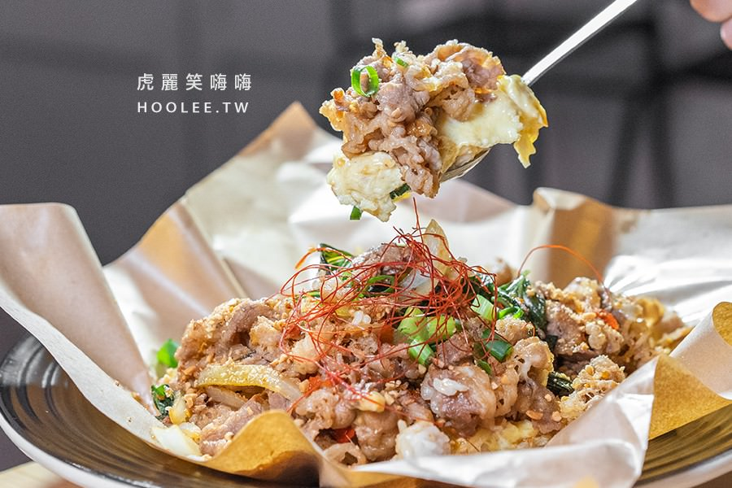
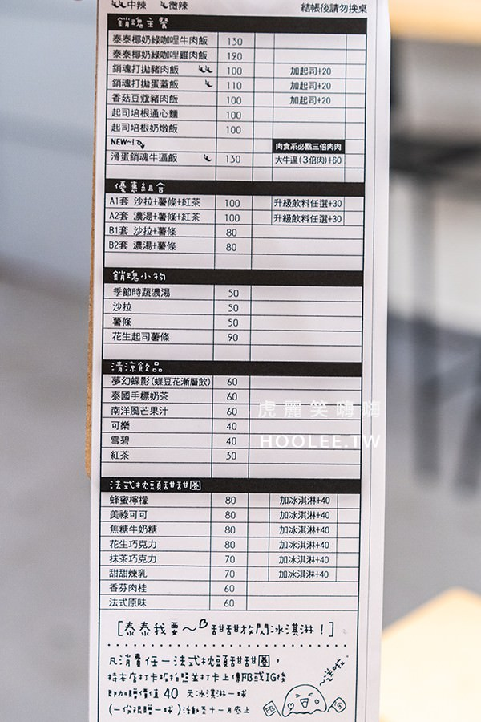

泰泰我要 銷魂飯館位在西子灣哨船頭、哈瑪星溜滑梯附近，是吃晚餐和宵夜的好去處，
店裡有多種闆娘調配特製的料理，加入一些小巧思帶給味蕾不同饗宴，還有虎麗蠻喜歡的紙包出餐方式(笑)。
來這裡推薦必吃滑蛋銷魂牛逼飯，肉控還能升級大牛逼享用3倍肉，濃郁香醇的滋味搭配滑蛋吃起來頗涮嘴！
如果喜歡椰奶香氣的可以試試泰泰椰奶綠咖哩雞肉飯，餐點帶有辛辣味，加上湯汁會包覆白米飯，吃起來相當夠味。
餐後別忘了再來一份甜點滿足甜食胃，可愛的法式枕頭甜甜圈灑上美祿可可和冰淇淋，會有冰火五重天的快感哦～


御澗章魚燒
THIS BALL
Pancake Ken’s kitchen
我的期末學習心得